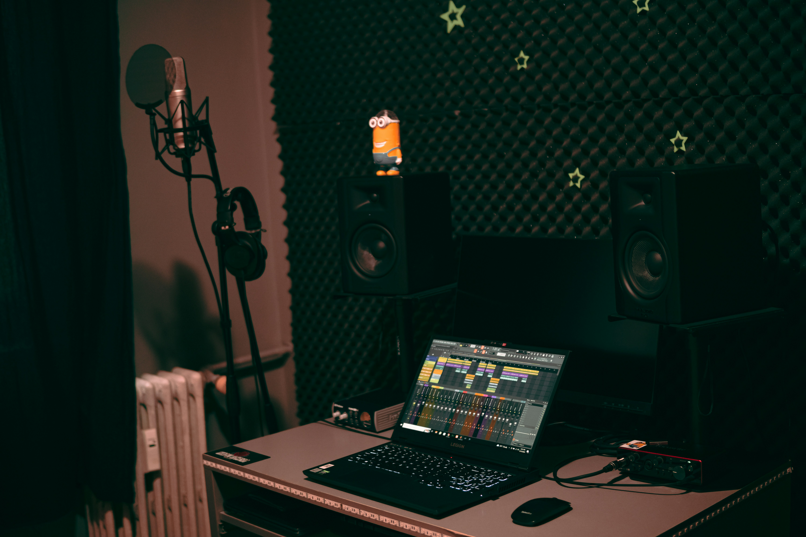

Myślisz, że do nagrania dobrego wokalu potrzebujesz profesjonalnego studia? To jeden z największych mitów w produkcji muzycznej. Dziesiątki świetnie brzmiących płyt powstało w sypialni, szafie albo rogu pokoju wyłożonym kocami. Kluczem nie jest budżet - kluczem jest wiedza. W tym artykule pokażemy Ci krok po kroku, jak nagrać wokal w domu tak, żeby brzmiał czysto, naturalnie i profesjonalnie.
Czy naprawdę potrzebujesz studia?
Krótka odpowiedź: nie. Długa odpowiedź: to zależy od tego, co chcesz osiągnąć - ale w zdecydowanej większości przypadków domowe nagranie w pełni wystarczy. Profesjonalne studia mają przewagę w zakresie akustyki i sprzętu z półki, której nie kupujesz za 500 zł. Ale te różnice są coraz mniejsze, a przy odpowiednim podejściu do akustyki i techniki nagrania możesz uzyskać wynik, który z powodzeniem przejdzie przez miks i mastering.
Większość problemów z domowym wokalem wynika z trzech źródeł: złej akustyki pomieszczenia, nieodpowiedniego ustawienia mikrofonu i błędów przy ustawianiu poziomów. Każdy z tych problemów da się rozwiązać bez wydawania fortuny. Zacznijmy od podstaw.
Mikrofon - najważniejszy wybór
Mikrofon to pierwsza i najważniejsza decyzja sprzętowa przy nagrywaniu wokalu. Rynek oferuje setki modeli w bardzo różnych cenach, ale żeby sensownie wybierać, musisz rozumieć dwa podstawowe podziały.
Mikrofon pojemnościowy vs dynamiczny
Mikrofon pojemnościowy to standardowy wybór do nagrywania wokalu w studio. Ma szerokie pasmo przenoszenia, wysoką czułość i świetnie odwzorowuje szczegóły - delikatne oddechy, frazy, barwę głosu. To właśnie tej czułości chcesz przy wokalu studyjnym. Wadą jest to, że tak samo czule rejestruje wszystko inne: pogłos pomieszczenia, szum klimatyzacji, odgłosy z ulicy.
Mikrofon dynamiczny jest mniej czuły i bardziej odporny na niepożądane dźwięki. Świetnie sprawdza się na żywych koncertach i w słabo wygłuszonych pomieszczeniach. Jeśli twój pokój brzmi jak łazienka, dynamik może być lepszym wyborem niż tani kondenser nagrywający każdy pogłos.
USB vs XLR - co wybrać na start?
Mikrofony USB podłączają się bezpośrednio do komputera - nie potrzebujesz dodatkowego interfejsu audio. To świetna opcja na absolutny start, gdy chcesz możliwie szybko zacząć nagrywać bez inwestowania w dodatkowy sprzęt. Popularne modele budżetowe to m.in. Samson Q2U (jednocześnie USB i XLR) czy Blue Yeti.
Mikrofony XLR wymagają interfejsu audio (urządzenia, które zamienia sygnał analogowy na cyfrowy), ale dają więcej możliwości w przyszłości - lepszą jakość przetworników, niższy szum własny i możliwość rozbudowy zestawu. Na start popularny wybór to np. Audio-Technica AT2020 albo Rode NT1-A w połączeniu z interfejsem Focusrite Scarlett Solo lub 2i2.
Wskazówka: Zanim kupisz drogi mikrofon, popraw akustykę pomieszczenia. Tani mikrofon w dobrej akustyce brzmi lepiej niż drogi kondenser w pokoju z gołymi ścianami.

Akustyka - jak zagłuszyć pokój domowymi sposobami
To największy problem domowych nagrań. Pusty pokój z gładkimi ścianami generuje odbicia i pogłos, które wchodzą do nagrania i sprawiają, że wokal brzmi „jak w klatce schodowej". Nie musisz kupować profesjonalnych paneli akustycznych, żeby to naprawić.
Szafa z ubraniami
Brzmi banalnie, ale jest prawdopodobnie najlepszą darmową budką nagraniową, jaką możesz mieć w domu. Gęsto upakowane ubrania pochłaniają odbicia ze wszystkich stron, a szafa ma stosunkowo małą objętość. Nagrano w ten sposób setki komercyjnych nagrań. Wejdź do szafy, zamknij drzwi, zaśpiewaj - i posłuchaj różnicy.
Koce i materace
Jeśli nagrywasz poza szafą, otoczyć się kocami to najtańszy sposób na zmniejszenie odbić. Powieszenie ciężkiego koca za mikrofonem (po stronie, z której nie śpiewasz) absorbuje znaczną część energii. Podobnie działa materac oparty pionowo o ścianę.
Narożniki i dyfuzory
Narożniki pomieszczenia są najgłośniejszymi miejscami pod względem basowego nagromadzenia. Umieszczenie czegoś pochłaniającego w narożnikach - choćby pudeł z książkami czy regałów z nieładnie ułożonymi przedmiotami - zmniejsza rezonans. Nieregularne powierzchnie dyfuzują dźwięk zamiast go odbijać pod tym samym kątem.
Maty akustyczne
Jeśli chcesz zainwestować choć trochę, pianki akustyczne (np. kliny akustyczne) kosztują relatywnie niewiele i można je przykleić za mikrofonem. Nie zastąpią pełnej izolacji, ale przy wokalu robią wyraźną różnicę - szczególnie w zakresie średnich i wysokich częstotliwości.
Ustawienie mikrofonu i odległość od źródła
Nawet najlepszy mikrofon nagra kiepski wokal, jeśli stoisz za daleko, za blisko albo pod złym kątem. Zasady są proste, a opanowanie ich nie wymaga żadnego sprzętu.
Zasada 15-20 cm
Standardowa odległość mikrofonu od ust przy nagraniu wokalu to 15-20 cm. Bliżej powoduje efekt zbliżeniowy (nadmierne podbicie basu) i wyłapuje każdy oddech i syczącą spółgłoskę. Dalej - zwiększasz udział pomieszczenia w nagraniu, nagranie staje się cienkie i odległe. 15-20 cm to dobry punkt startowy; koryguj w zależności od charakterystyki swojego głosu.
Filtr pop
Filtr pop (ekran z siateczki przed mikrofonem) eliminuje plosive - głośne wybuchy powietrza przy spółgłoskach P, B, T. Bez niego każde „po" i „bum" będzie wchodziło do nagrania jako głuchy stuk. Filtr pop kosztuje kilkanaście złotych i jest niezbędnym elementem zestawu do nagrywania wokalu.
Kierunkowość mikrofonu
Większość mikrofonów pojemnościowych ma charakterystykę kardioidalną - reaguje głównie na dźwięk z przodu, a odrzuca dźwięki z tyłu i boków. Ustaw mikrofon kapsułą w kierunku ust, a nieakustyczną stronę skieruj w stronę refleksyjnej ściany lub okna, które chcesz wyciszyć.
Nagrywanie w DAW - gain staging i poziomy
Sprzęt ustawiony, akustyka zadbana - czas otworzyć program DAW i prawidłowo ustawić poziomy. To etap, który decyduje o tym, czy nagranie będzie czyste i elastyczne w obróbce, czy spłaszczone i pełne zniekształceń.
Unikanie clippingu
Clipping to cyfrowe przesterowanie - moment, gdy sygnał przekracza maksymalny poziom przetwornika i wychodzi jako brzydkie, twarde zniekształcenie, którego nie da się naprawić w postprodukcji. Wskaźniki poziomu w DAW-ie i na interfejsie nie mogą w żadnym momencie dochodzić do czerwonego - powinny być utrzymywane z wyraźnym zapasem.
Nagrywanie na -18 dBFS
Standardem przy nagrywaniu jest celowanie w -18 dBFS RMS - to znaczy, że przeciętny poziom głośności sygnału powinien oscylować wokół -18 dB w skali cyfrowej. Szczyty głośności mogą sięgać -6 dBFS, ale nie powinny przekraczać 0 dBFS. Ten zapas (tzw. headroom) daje przestrzeń do obróbki w miksie bez ryzyka przesterowania.

Najczęstsze błędy przy nagrywaniu wokalu w domu
- Nagrywanie w pustym pokoju - gołe ściany i podłoga tworzą niepożądany pogłos, który wchodzi do mikrofonu. Zawsze zadbaj o akustykę przed nagraniem.
- Za głośne nagrywanie - gain zbyt wysoko, sygnał za głośny. Zostaw headroom i celuj w -18 dBFS.
- Brak filtra pop - plosive wchodzą do nagrania i nie da się ich usunąć bez artefaktów.
- Nagrywanie z włączonymi głośnikami - dźwięk z głośników wchodzi do mikrofonu. Podczas nagrywania zawsze używaj słuchawek.
- Śpiewanie prosto w kapsułę - lekkie odchylenie mikrofonu (ok. 15°) redukuje syczące spółgłoski i wybuchy powietrza.
- Ignorowanie szumów pomieszczenia - klimatyzacja, wentylator komputera, ruch uliczny. Nagrywaj w ciszy i słuchaj nagrania w słuchawkach przed zapisem.
- Śpiewanie ze zmęczonym głosem - najlepszy sprzęt nie naprawi słabego wykonania. Nagraj wtedy, gdy głos jest wypoczęty i rozgrzany.
Podsumowanie - minimalny zestaw startowy
Nie potrzebujesz dużo, żeby zacząć nagrywać dobry wokal w domu. Oto absolutne minimum:
- Mikrofon - kondenser USB (np. Samson Q2U) albo XLR (AT2020) z interfejsem (Focusrite Scarlett Solo)
- Statyw mikrofonowy - elastyczne ramię lub statyw podłogowy; nie trzymaj mikrofonu w ręce
- Filtr pop - kilkanaście złotych, niezbędny element
- Słuchawki zamknięte - do odsłuchu podczas nagrania; nie głośniki
- DAW - darmowy Reaper (wersja trial bez ograniczeń) albo GarageBand (macOS) w zupełności wystarczą
- Wygłuszona przestrzeń - szafa, kąt pokoju z kocami, namiot z koców; to ważniejsze niż cena mikrofonu
Kiedy już opanujesz nagrywanie, kolejny krok to nauka obsługi DAW-a i podstaw produkcji muzyki. Gdzie zacząć? Sprawdź nasz przewodnik jak zacząć produkcję muzyki - znajdziesz tam mapę drogową dla początkujących, która pomoże Ci poukładać kolejne kroki.
Najlepsze nagranie to takie, które zostało zrobione - nawet w szafie, z tanim mikrofonem i kocami na ścianach. Zacznij, nagraj, popraw przy kolejnym podejściu.